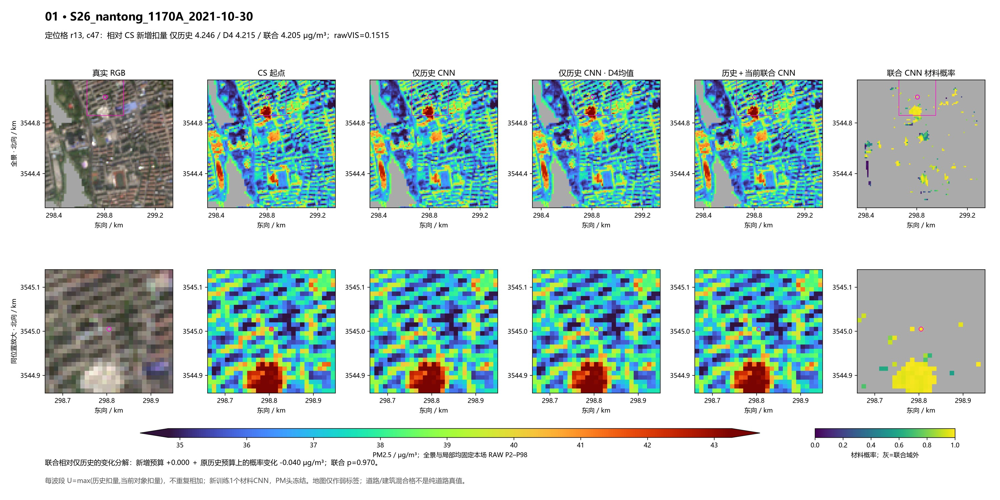
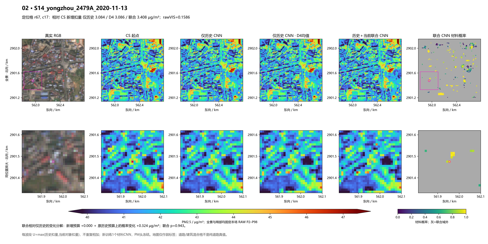
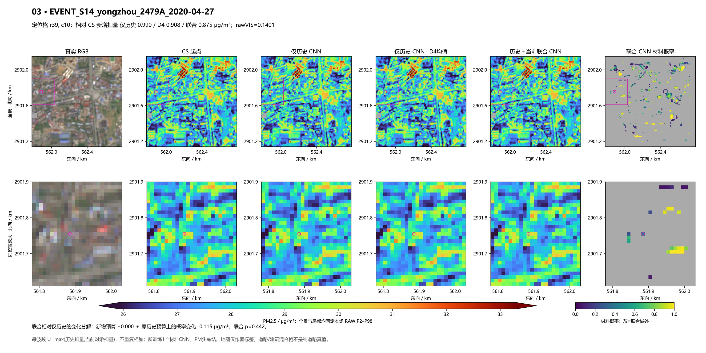
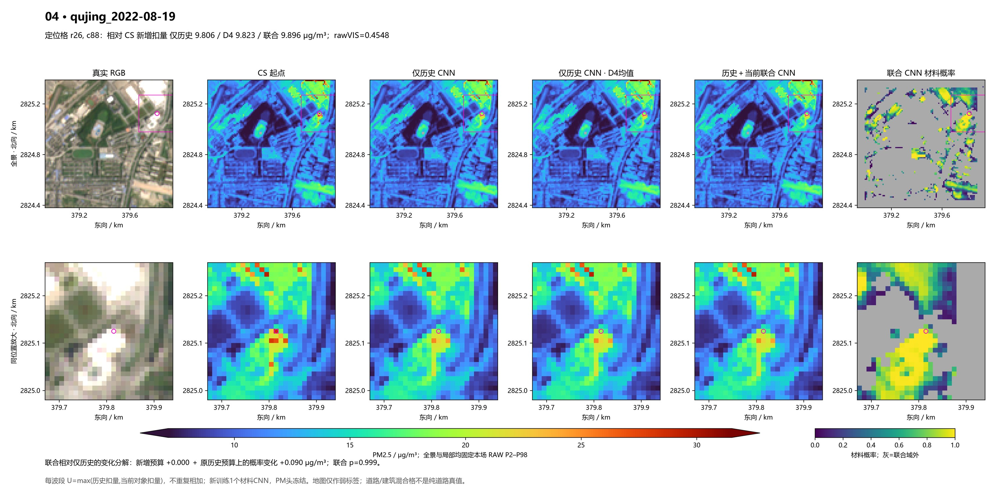
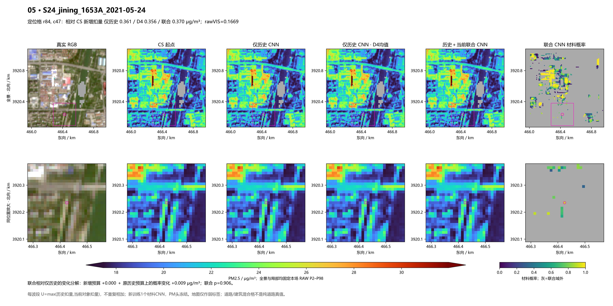
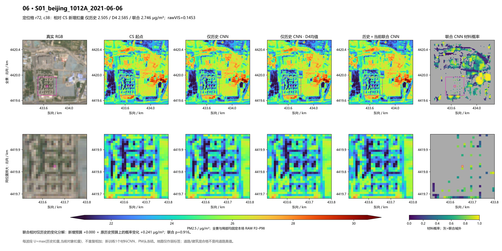
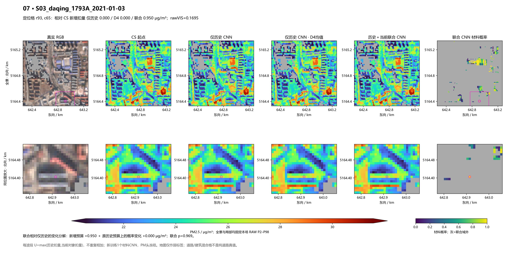
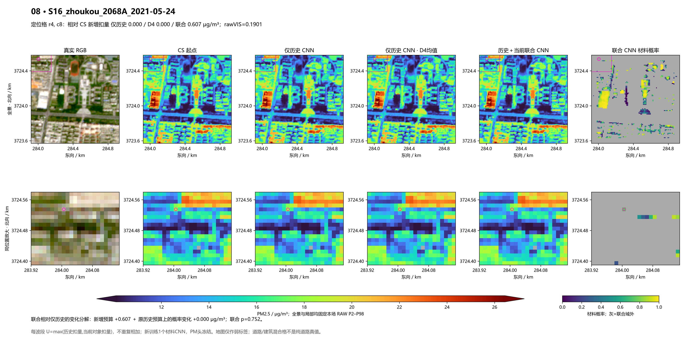

相同 CS 起点，按每个可见波段取历史模板与当前对象可扣量的较大值，再由联合域重新训练的一次材料 CNN 决定实际扣量。训练与像元使用同一 12 通道小窗；地图仅作弱标签。原 NIR、有效支持和冻结 PM 头均保持。
原30残留对象由旧 CNN 的10对象/31格、均降0.120917，变为25对象/56格、均降0.329168 μg/m³。全图小亮缓解增加，但地图道路混合格仍有大幅降低，站窗PM误差没有改善。真正缺历史留出仅25格，建筑召回1/8，不能称这一稀少子域已学好。
实际结果与代价 · 固定合同 · 同支持比较 · 原30分解 · 原12季节点 · 弱标签分类 · 图中实际值
前六图沿用原固定位置；最后两图按本轮新增范围的效果选择作事后展示，不能当作新的验证集。各图全景与局部保持同一 RAW 色限。
沿用此前固定六点；不因本次效果更换
定位格：仅历史 CNN 降 4.246、D4 降 4.215、联合 CNN 降 4.205 μg/m³。相对仅历史的变化＝预算扩展 +0.000 ＋ 概率变化 -0.040。降低更多不自动等于真实PM误差改善。

沿用此前固定六点；不因本次效果更换
定位格：仅历史 CNN 降 3.084、D4 降 3.086、联合 CNN 降 3.408 μg/m³。相对仅历史的变化＝预算扩展 +0.000 ＋ 概率变化 +0.324。降低更多不自动等于真实PM误差改善。

沿用此前固定六点；不因本次效果更换
定位格：仅历史 CNN 降 0.990、D4 降 0.908、联合 CNN 降 0.875 μg/m³。相对仅历史的变化＝预算扩展 +0.000 ＋ 概率变化 -0.115。降低更多不自动等于真实PM误差改善。

沿用此前固定六点；不因本次效果更换
定位格：仅历史 CNN 降 9.806、D4 降 9.823、联合 CNN 降 9.896 μg/m³。相对仅历史的变化＝预算扩展 +0.000 ＋ 概率变化 +0.090。降低更多不自动等于真实PM误差改善。

沿用此前固定六点；不因本次效果更换
定位格：仅历史 CNN 降 0.361、D4 降 0.356、联合 CNN 降 0.370 μg/m³。相对仅历史的变化＝预算扩展 +0.000 ＋ 概率变化 +0.009。降低更多不自动等于真实PM误差改善。

沿用此前固定六点；不因本次效果更换
定位格：仅历史 CNN 降 2.505、D4 降 2.585、联合 CNN 降 2.746 μg/m³。相对仅历史的变化＝预算扩展 +0.000 ＋ 概率变化 +0.241。降低更多不自动等于真实PM误差改善。

事后展示：原锁定30对象中，新增可触达对象的平均预算贡献最大；不作为验证样本
定位格：仅历史 CNN 降 0.000、D4 降 0.000、联合 CNN 降 0.950 μg/m³。相对仅历史的变化＝预算扩展 +0.950 ＋ 概率变化 +0.000。降低更多不自动等于真实PM误差改善。

事后不利展示：全部206场 current-only 地图道路交格新增降幅最大；地图交格可能与建筑混合
定位格：仅历史 CNN 降 0.000、D4 降 0.000、联合 CNN 降 0.607 μg/m³。相对仅历史的变化＝预算扩展 +0.607 ＋ 概率变化 +0.000。降低更多不自动等于真实PM误差改善。
